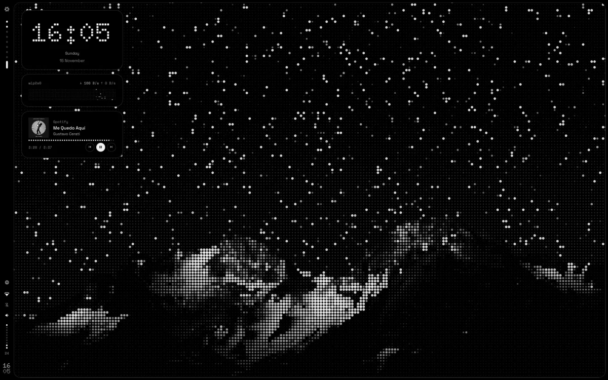
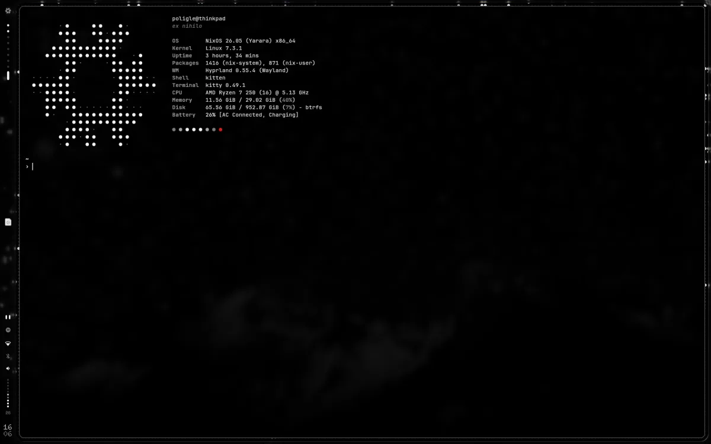
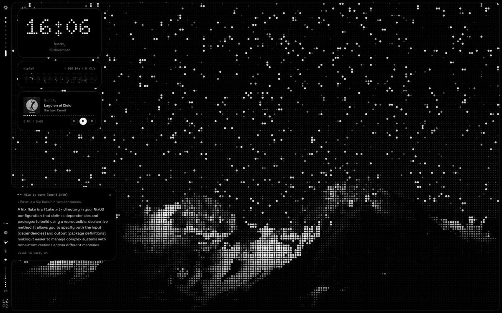
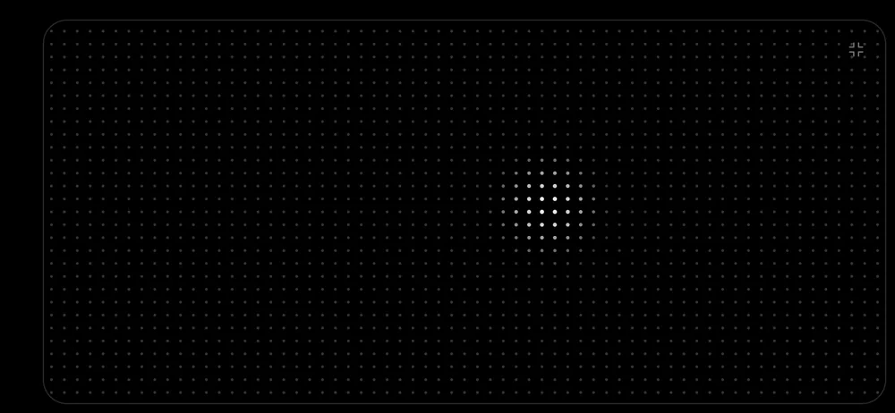
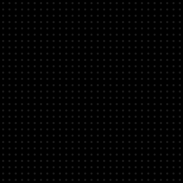
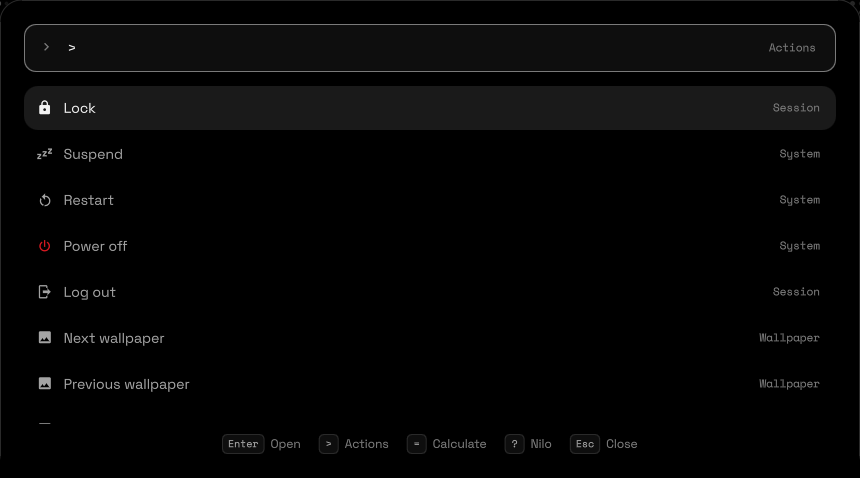

ex nihilo
A monochrome, dot‑matrix desktop for NixOS
Caelestia's frame and drawers, dressed in the language of Nothing: greys for hierarchy, dots for display, red only to interrupt. All of it declared in Nix, from the boot splash to the lock screen.

One shape around the screen
The frame is a single black shape. Its left side widens into the bar, with the workspaces as LEDs and the clock in dots, and the drawers grow out of it with concave joints, so they read as part of the hardware rather than windows on top.
Dashboard
Time, music with its cover and spectrum drawn in dots, system dials, a network oscilloscope, a kanban you drag into order, in sync with the phone, and Vector: paste or drop a text, a picture, a video or any file on it and it shrinks away to the phone; what the phone sends waits there, to copy, save or open.
Quick settings
Wi‑Fi with passwords, Bluetooth, audio output, caffeine to keep the screen awake, a screenshot or a recording at a tap, segmented sliders, the notification history and the session.
Launcher
Apps stay grey until you select them. Type > for actions, = to calculate and ? to ask Nilo.
Clipboard history
Copy and paste with the same keys in every app. Hold the paste key and the history comes out; let go and the one lit is pasted. Pictures and colours too, and nothing a password manager copies. With the phone as a deck, the dashboard's Vector carries what you paste to it, and back.
Wallpapers
Every picture drawn as an LED matrix for each screen. The arrows show them on the desktop as you go; Enter keeps one and Escape goes back.
Every workspace
The workspaces side by side, each with its windows over the wallpaper. Hold SUPER and press A again to choose, and let go to be there.
Light on the edge
Every notification sends a segment of light around the frame, and critical ones run twice, in red, like the battery warnings at 15, 10 and 5 %. Plug in the charger and two lights climb both sides from the bottom until they meet at the top. A rebuild or a download fills the edge as far as it has got.
Preferences
One sheet for the whole system: you, language and region, the look, plain or in smoked glass, screens, shortcuts, the system, its generations and the phone. Applying is a NixOS rebuild in the background, with a fingerprint or the password.
The system, too
The computer's name, Nilo and what runs its model, how much the clipboard keeps, the sound at boot, the fingerprint and SSH: every switch an option of the flake.
Nilo
Two white eyes in the launcher, and a model that runs on this computer. It answers, opens apps and, if you let it, works in a repository of yours or uses the whole desktop as you would. More about Nilo.
? in the launcherScreenshots
Print takes the screen you are on, the snipping key an area you draw. Each is kept in Pictures and copied, ready to paste in a chat or a document.
Recording
The same keys with SHIFT record the screen or an area, and stop it. While it records the bar's red LED is lit, as for the microphone; the video is kept in Videos and copied as a file.
Or all of it in smoked glass
One switch in Preferences, Desktop, and the frame, its drawers and every card, key and field in them turn to dark glass over what is really there: the wallpaper, dot for dot, and the windows, captured live where they are. A third of it comes through the smoke. The bevel is clear and bends it outwards, the face beyond is frosted, and a glint catches the edge from the top left.
It goes everywhere: the terminal lets the wallpaper through, blurred and darkened, the lock screen and the login are glass too, and the player on the lock screen gets a panel of its own while something plays. Off, NIHIL is what it always was: black, flat, hardware.


Nilo, an assistant that lives here
Two white eyes in the launcher, and a model that runs on this computer: Qwen 3.5 on Ollama, with no account and no cloud. They sleep while the model is unloaded, wake up as you type, look up while it thinks and from side to side while it searches. Simple questions can go to a smaller, faster model, and after a few minutes without questions it falls asleep and the model leaves memory.
? in the launcher-
Chat
It answers, looks at this computer and opens apps:
abre zenopens it at once. -
Terminal and repository
Also a repository of yours: its files, git and the terminal. Every change to a file comes as a diff first, every commit and every command that does more than read waits for enter twice or a click, and anything with sudo opens in a terminal for your password.
-
The whole system
Also the desktop, as you would use it: it sees what is open and the screen, writes in Writer, puts on the song you name, opens Zen on a search, moves windows, turns the volume and sends things to your phone.
-
Internet, apart
Searching and reading pages is a switch of its own, at any level.
What has a risk, asked
You choose the level, and the last two wait for your authorization. Typing in a terminal, closing a window or a shortcut that deletes asks first; writing in Writer or skipping a song doesn't. Keys, passwords and browser profiles stay out of its reach. Once it has read a web page or the screen it asks before typing or sending anything, so what a page says is never an order; once it has read your files, it asks before anything goes out to the internet.


It says when it's done
Close the launcher while it thinks and it carries on. The answer comes out of the bar, next to its eyes, and a click takes you back to the conversation.
# off by default: Preferences, System turns it on; or in /etc/nixos/local.nix
nihil.nilo =
{
enable = true;
acceleration = "vulkan"; # or "cpu", "rocm", "cuda"
};The phone as a deck
With NIHIL Launcher on Android, paired with a QR from Preferences, the phone opens this computer's apps and web pages, plays and skips its music, turns its volume, locks it and is its trackpad. That is all: no commands, and no files but the ones you hand to Vector. On the phone it is one landscape screen in workspaces: the music, the apps and the webs, and the trackpad. The dashboard's kanban stays in sync with the phone's, its order too.
Vector carries one thing at a time, either way: a text, a picture, a video or any file up to 100 MB. Paste it on the dashboard's Vector, or drag it to the top of the screen and drop it there, and it waits on the phone, in Tasks, above the kanban; send it from the phone and it waits on the dashboard. Copy it, save it in a Vector folder or open it, and its place is empty again.
With NIHIL for Wear OS, the watch is one more deck: its music, its volume on the bezel or the crown, its caffeine, night light and lock. The phone, a tablet and the watch can all be decks at once.
The trackpad is a touchpad here: the phone streams its fingers, and libinput reads them as it reads the laptop's, with its settings. The QR holds a code that pairs once, for five minutes, and the pin of the computer's own certificate: the phone talks HTTPS only to the computer whose key it was shown. The protocol is in docs/deck.md.




Every generation, a click away
Each rebuild is a whole system NixOS keeps, and Preferences lists them, newest first: when each was made, its NixOS, kernel and NIHIL, which one runs and which one boots.
What it changed
Opened, a generation says which packages it brought against the one before, version by version, or that only their settings changed.
Back to it, or once
Now and at boot without restarting, or the next boot only, for a kernel or a driver. Your settings stay: the next apply builds from them again.
Room on the disk
How long they stay, 7, 30 or 90 days, which the weekly clean keeps. Cleaning now says what it freed.
nihil generations # the same, in a terminal
nihil generations changes 212
nihil generations switch 211 # or boot 211, the next boot only
nihil generations clean 7Three rules
One file, theme/nihil.nix, holds the tokens. GTK, the terminal, the editor, the viewers, the compositor, the lock screen, the greeter, the boot splash and the shell are all generated from it.
Hierarchy is made with greys
Red never decorates. It only interrupts: a failed login, a critical notification, the recording LED, a destructive action. Nor is it ever small text: what went wrong is said in ink, with a red LED before it.
Dots are for display
Doto draws the clock and the big numbers. Text is set in Space Grotesk and metadata in Space Mono.
The frame is hardware
Opaque and flat, with no shadows. Windows sit concentric with it: their rounding is the frame's minus the gap. Or, if you choose it, smoked glass: dark, frosted, clear and bent at its edges, over what is really behind it, windows too. The terminal goes with it.
- Void
#000000Frame, bar, drawers - Surface
#0E0E0ECards - Raised
#1A1A1AHover, tracks - Line
#2A2A2A1 px lines - Off
#333333Unlit LEDs - Muted
#7A7A7AMetadata - Dim
#A3A3A3Secondary text - Ink
#F2F2F2Text, lit LEDs - Signal
#D71921Interrupts only
From nothing, at boot
The NixOS snowflake as an LED matrix: it switches on from the centre to the power‑off notes going up, the last one with the last LED, then a band of light sweeps it until the login screen, NIHIL's own, with the lock screen's face. theme/plymouth.py renders every frame when the system is built.
The wallpapers work the same way. Every image in wallpapers/ is rendered as dots once per screen, at its native size, so each LED lands on exact pixels. Try it with a picture of yours in the studio.

Spanish or English
One option sets every string of the shell, the lock screen and the greeter, and the language of their dates.

/etc/nixos/settings.json
"language": "en" // or "es"Install
Two ways in, to the same system: the installer, on any computer, or the NixOS you already have, from a clone of this repository. Each machine keeps what is its own in /etc/nixos: who uses it, its language, keyboard and screens. NIHIL comes from here, and updates never touch what is yours.
With the installer
-
Download the installer
The ISO is in Releases:
latest, built from every push, or a tagged version. Check it againstSHA256SUMS, write it to a USB stick and boot it (UEFI, with Secure Boot off: NixOS isn't signed for it).sha256sum -c SHA256SUMS --ignore-missing sudo dd if=nihil-*.iso of=/dev/sdX bs=4M status=progress oflag=sync -
Answer a few questions
Language, network, keyboard, time zone, your name and password, and where it goes: a whole disk, or next to Windows or another system, in room it makes by shrinking it safely, and the rest stays as it is. Its boot menu offers the other system too; Windows on another disk stays in the computer's own (F12, F11, Esc…), and a Windows with BitLocker asks for its recovery key once: have it at hand. It finds your screens and GPU on its own.
-
Make it yours
The first login opens the welcome: what NIHIL is and how its frame works, then your name, language, keyboard, wallpaper and system. Later, Preferences (
SUPER + O, or the cog in quick settings) changes all of it, and the shortcuts too, and applies it by rebuilding the system in the background.
On a NixOS you already have
The classic way: clone NIHIL and rebuild from it. Any NixOS on UEFI will do; the switch brings it to the release NIHIL pins, booting with systemd-boot.
-
Clone NIHIL
Your own copy, to read, change and pull.
git clone https://github.com/poligle/Nihil-Shell ~/Nihil-Shell -
Give the machine its flake
The template goes to
/etc/nixos, next to thehardware-configuration.nixit already has. Insettings.json: the user you have, the computer's name, language, keyboard, time zone and screens; inlocal.nix, thesystem.stateVersionof your oldconfiguration.nix.sudo cp -a /etc/nixos /etc/nixos.before-nihil sudo cp ~/Nihil-Shell/templates/machine/{flake.nix,settings.json,local.nix,home.nix} /etc/nixos/ sudoedit /etc/nixos/settings.json /etc/nixos/local.nix -
Build it from the clone
Point the flake at your copy and switch;
HOSTis the computer's name. Leave thesedout to follow GitHub instead.sudo sed -i "s|github:poligle/Nihil-Shell|path:$HOME/Nihil-Shell|" /etc/nixos/flake.nix sudo NIX_CONFIG="experimental-features = nix-command flakes" \ nixos-rebuild switch --flake /etc/nixos#HOST
Keep it up to date
One command brings the latest NIHIL and rebuilds (with a clone, git pull it first); another applies your own changes. nihil dev tries a checkout's changes before pushing them.
nihil update
nihil rebuild
nihil dev ~/Nihil-Shell # until nihil dev offOptions
All of them live under nihil.* in modules/nihil.nix.
| Option | Default | What it does |
|---|---|---|
language | "en" | Language of the shell, lock screen, greeter and script messages: "es" or "en". |
outputs | None | Screens of the host: logical size, whether the frame widens into the bar, dot pitch. |
primaryOutput | None | Screen for the desktop widgets and the lock and login backgrounds. |
wallpaper | "night" | Default wallpaper, by name: a picture in wallpapers/ or /etc/nixos/wallpapers, without the extension. |
soundPack | "nihil" | The synthesised NIHIL sounds, or "classic" for the earlier ones. |
greeter | "nihil" | The login screen: NIHIL's own, in Quickshell, with ReGreet in its place should it not start, or "regreet" alone. |
trayHidden | [ "nm-applet" "blueman" ] | Tray items to hide, by part of their id or title. The bar already shows Wi‑Fi and Bluetooth. |
nilo. | false | Nilo, the assistant, with Ollama running its model on 127.0.0.1. |
nilo. | "cpu" | What runs the model: "cpu", or the GPU through "vulkan", "rocm" or "cuda". |
nilo. | 16384 | Tokens of conversation Nilo keeps in view: more remembers more and takes more memory. |
nilo. | 1 | Models Ollama keeps in memory at once. With 2, the automatic choice of model switches without loading again. |
nilo. | nilo-nihil | Who Nilo signs its commits as, so GitHub shows its face next to yours. null for none. |
generations. | 7 | How long generations stay: the weekly clean removes the older ones, never the one in use. |
deck. | false | The phone as a deck: its service, its port in the firewall, its name on the local network and uinput for the trackpad. |